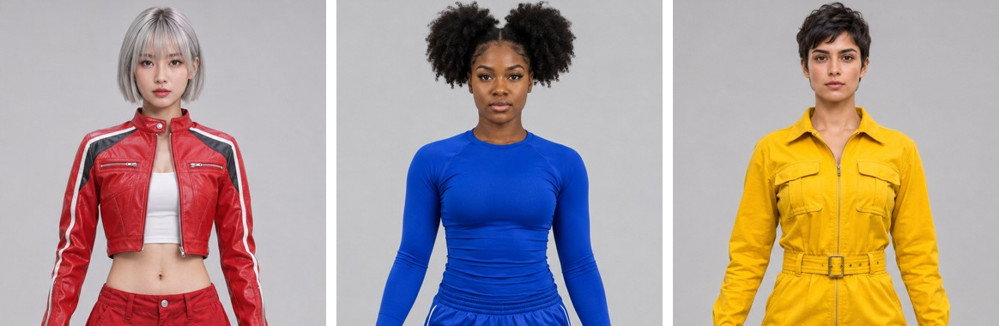
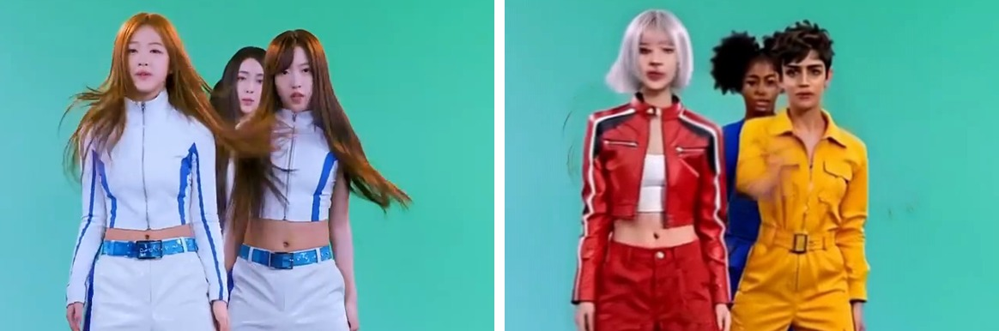
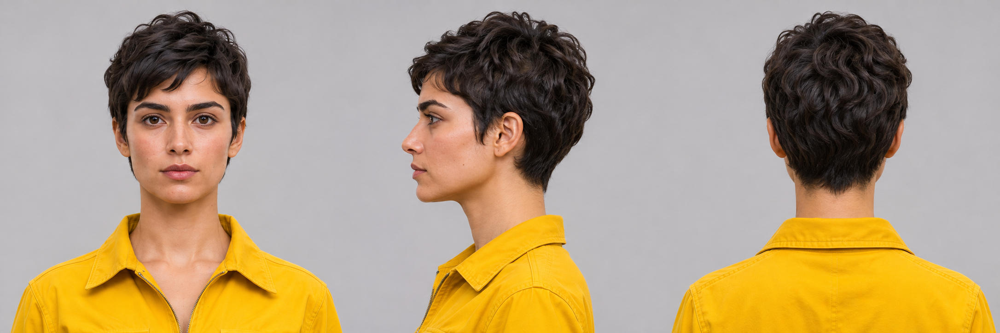

안무 영상의 세 캐릭터 교체 방법
NEON 안무 영상 | ComfyUI · MiniMax H3 Ref2VA | 로컬 작업 가이드
원본 안무와 음악을 유지하면서 앞줄 두 명과 뒷줄 한 명을 각각 다른 캐릭터로 바꾸는 절차다. 먼저 약 3초에서 세 사람이 올바르게 바뀌는지 확인한다. 전체 영상은 겹치는 구간으로 나눠 생성하고, 고개를 돌릴 때 달라지는 머리 모양은 해당 인물만 다시 편집한다.
원본에서 교체할 세 사람 정하기

| 참조 슬롯 | 원본에서 찾을 사람 | 교체 후 계속 추적할 특징 |
|---|---|---|
| Picture 1 · 빨강 | 앞줄 왼쪽의 구릿빛 머리 | 은색 단발과 빨간 레이싱복 |
| Picture 2 · 파랑 | 뒤 중앙의 흰 미니드레스 | 두 갈래 아프로 퍼프와 파란 운동복 |
| Picture 3 · 노랑 | 앞줄 오른쪽의 짙은 앞머리 | 귀와 목덜미가 드러나는 검은 픽시컷과 노란 점프슈트 |
같은 시점에서 동작 대조하기

6초 부근의 원본(왼쪽)과 최종본(오른쪽). 빨강과 노랑 사이에 있는 파랑의 얼굴이 원본처럼 일부 가려지는지 본다. 좌우는 등장 시점의 단서이며, 후반에 두 사람이 교차해도 참조 슬롯은 그대로 유지한다.
ComfyUI에서 짧은 테스트와 전체 구간 생성하기
1 원본과 참조 이미지 연결
작업용 사본을 416×736, 24 fps로 만든다. 원본 MP4는 최종 오디오와 타이밍 대조용으로 보관한다. 코덱스 이미지 생성으로 만든 전신 사진을 한 사람당 한 장씩 준비하고, 얼굴·머리 윤곽·의상 전체가 잘 보이는지 확인한다.
LoadVideo → GetVideoComponents의 영상 프레임을 MiniMaxH3ReferenceToVideo의 ref_video_1에 연결한다. LoadImage 세 개로 01-red.png, 02-blue.png, 03-yellow.png를 불러와 ref_image_1, 2, 3에 차례로 연결한다. 03-yellow-angles.png는 마지막 머리 보정 단계에 사용한다.
2 약 3초로 배역과 동작 확인
| 항목 | NEON 테스트에 사용한 값 |
|---|---|
| 모델 연결 | H3 Ref2VA Pruned INT8 → H3 Turbo 8-step LoRA → Character Swap LoRA v1.5. 두 LoRA 강도는 각각 1.0 |
| 인코더와 VAE | Qwen3-VL 32B MiniMax H3 NVFP4 AWQ · H3 Video VAE INT8 · H3 Audio VAE FP32 |
| 샘플링 | er_sde · normal · 8스텝 · denoise 1.0 · 시드 14981 |
| 입출력 | 416×736 · 24 fps · 73프레임 · 참조 이미지 크기 match. 디코딩 후 CreateVideo → SaveVideo로 MP4 저장 |
로컬 Ref2VA 기본 그래프 열기 · 기본 그래프에 이미지 슬롯 두 개를 추가해 세 사람을 연결한다.
프롬프트 예시
“<Video 1>의 안무, 카메라와 바닥 반사를 유지한다. 앞줄의 구릿빛 머리는 <Picture 1>, 뒤 중앙의 흰 미니드레스는 <Picture 2>, 앞줄의 짙은 앞머리는 <Picture 3>으로 교체한다. 노란 옷 인물이 몸을 돌릴 때도 검은 머리는 귀 위에서 끝나고 목덜미가 보인다.”
3 인물의 이동을 표시하고 구간별로 생성
24 fps 영상에서 6프레임(0.25초) 간격으로 각 얼굴 중심을 표시하고 사이 위치를 보간한다. 완전히 가려진 인물은 해당 시점의 표시를 끈다. NEON에서는 이 궤적을 따라 옷에 빨강·파랑·노랑을 옅게 입힌 가이드 영상을 만들어 H3에 입력했다.
기본 구간은 124프레임(약 5.17초)이다. 작업본의 0, 104, 210, 315, 418번 프레임에서 시작해 이웃 구간을 18~21프레임 겹쳤다. 후반 교차와 퇴장에는 더 짧은 보정 구간을 추가했다. 구간마다 누가 누구 앞을 지나고 화면 어디로 나가는지 프롬프트에 적는다.
회전 장면의 짧은 머리 보정과 최종 검수

노란 캐릭터의 정면·측면·후면 참조. 귀 주변 길이, 뒤통수의 윤곽, 목덜미와 옷깃 사이 간격을 맞춘다.
4 노란 캐릭터의 머리만 다시 편집
잘라내기 머리 중심을 따라 어깨까지 포함한 168×168 영역을 잘라 256×256으로 편집한다. 원래 위치를 프레임별로 저장해 두면 보정본을 같은 자리에 돌려놓을 수 있다.
참조 바꾸기 이 단계의 Picture 1에는 노란 캐릭터의 얼굴 확대 사진, Picture 2에는 위의 3면 사진을 넣는다. 머리가 길게 남은 배경은 청록색 무대나 노란 옷감으로 메운다. 시선, 고개를 돌리는 방향, 얼굴 앞을 지나는 손은 원본을 따른다.
다시 합성하기 가장자리를 부드럽게 만든 마스크로 머리 주변만 합성한다. 가림이 생기는 프레임에서는 앞사람의 의상과 팔을 보호한다. 고개를 돌리기 직전·옆얼굴·뒷모습을 이어 보며 목 뒤에 긴 가닥이 한 프레임만 나타나는지도 확인한다.
5 안무의 박자에 맞춰 이어 붙이기
원본과 생성 구간의 동작을 대조해 시간축을 맞춘다. 겹치는 범위에서 팔·얼굴의 위치가 가장 비슷한 프레임을 골라 짧게 혼합한다. 30 fps 원본에 맞게 중간 동작을 보간하고, 무대 상단의 자막과 로고는 원본에서 복원한다.
6 내보내기와 재생 검수
최종본은 720×1280, 30 fps, H.264 MP4로 저장했다. 원본 AAC 트랙을 그대로 복사하고, 영상 678프레임(22.60초)과 첫 영상 프레임의 시작 오프셋(1/30초)을 원본과 대조한다.
검수할 때는 등장 → 회전 → 교차 → 퇴장 순으로 본다. 뒤에 가려진 사람의 중복, 교차 후 옷 색 교환, 턱 밑 잔머리, 접합부에서 튀는 손발을 확인한다. 마지막에는 원음을 켜고 발 디딤과 비트가 맞는지 재생한다.